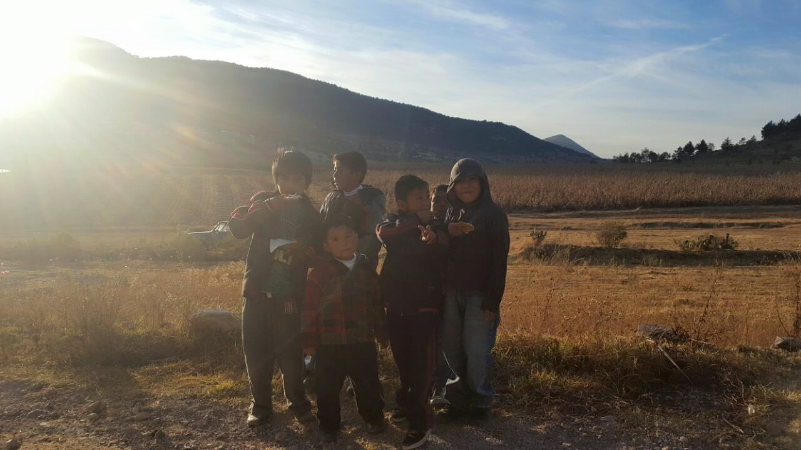

Aiming to bring a joyful holiday to children in need by delivering toys and sweets.
Donate NowAiming to bring a joyful holiday to children in need by delivering toys and sweets.
Donate Now
Co-CEO
Upon immigrating to the United States, Ana was deeply struck by the contrast between the lives of American children and those in her hometown of Jocotitlán, Mexico. Remembering her own childhood without the joy of opening a new toy, she began collecting donations from friends—many fellow immigrants—to bring joy to children back home.
Co-CEO, Web Designer
Inspired by her mother’s work, Kenia began gathering donations from teachers and classmates. In 2024, she built this website from scratch through the Dev Mission Pre-Apprenticeship Program, which equips young adults from underserved communities with coding and hardware skills. Visit her personal website.
Program Manager
A lifelong resident of Santiago de Casandeje, Otilia is known for her leadership and kindness. At Ana’s request, she took on the responsibility of organizing local toy drives, dedicating her free time to ensuring every event runs smoothly despite caring for her ill husband.
Santiago de Casandeje is a rural town in central Mexico, about a three-hour drive from Mexico City. Home primarily to indigenous Mazahua families, it has around 5,000 residents. Many children in the area do not receive toys during the holidays.
One of Mexico’s most beloved traditions is Día de los Reyes Magos (Three Kings Day), which commemorates the gifts brought to the newborn Jesus. Our mission is to ensure every child in Santiago de Casandeje enjoys fresh rosca de reyes (sweet bread) and the joy of receiving a new toy on this special day.

The joy of receiving a toy is complemented by a warm cup of home-made atole de avena and a warm Rosca de Reyes, honoring the flavors and customs of the holiday.
Each year, children of the Mazahua indigenous community receive gifts such as balls, toy cars, marbles, and even bicycles in celebration of Día de los Reyes Magos. This tradition is made possible through the generosity of our donors in the United States.
Fostering community is one of the core values of Un Juguete Para Cada Niño. Through activities such as piñatas and raffles, we aim to celebrate the heart of a pueblito like Santiago de Casandeje, its strong sense of togetherness.